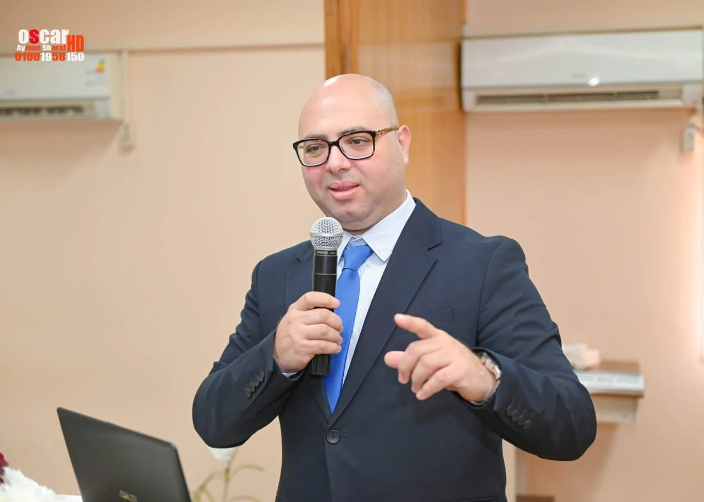
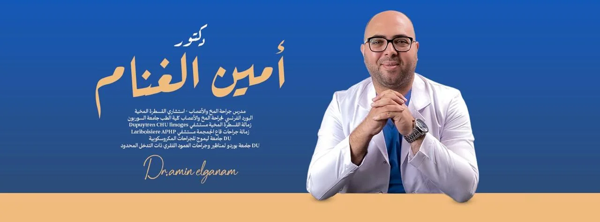

المكتبة المرئية
قصص ومعلومات، بصوت الدكتور.
مكتبة تجمع روابط الفيديوهات واللقاءات المقدمة من فريق الدكتور؛ ويتم تحديثها مع وصول مواد إضافية.

فيديو / 01
من أرشيف اللقاءات المصورة
نبدأ بالمقاطع التي أُرسلت ضمن ملفات المشروع. يمكن تشغيل الفيديو مباشرة أو فتح رابط YouTube الأصلي، على أن تُكتب العناوين والوصف الطبي بعد مراجعة المحتوى مع فريق الدكتور.
الفيديو على YouTubeفيديو / 02
محتوى طبي من المكتبة
فيديو إضافي من المواد المقدمة. يُعرض عنوان وصفي مؤقت لحين اعتماد الموضوع والمعلومات التي يتناولها الفيديو.
الفيديو على YouTube
وسائل التواصل
مقاطع إضافية من الأرشيف.
الروابط التالية تفتح المنشورات الأصلية على المنصات، وقد يتطلب عرضها تسجيل الدخول.